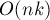
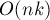
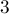
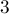
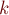

MAXimal
добавлено: 14 Sep 2008 14:08
редактировано: 24 Aug 2011 18:21
Содержание [скрыть]
Алгоритм Ахо-Корасик
Пусть дан набор строк в алфавите размера  суммарной длины
суммарной длины  . Алгоритм Ахо-Корасик строит для этого набора строк структуру данных "бор", а затем по этому бору строит автомат, всё за
. Алгоритм Ахо-Корасик строит для этого набора строк структуру данных "бор", а затем по этому бору строит автомат, всё за  времени и памяти. Полученный автомат уже может использоваться в различных задачах, простейшая из которых — это нахождение всех вхождений каждой строки из данного набора в некоторый текст за линейное время.
времени и памяти. Полученный автомат уже может использоваться в различных задачах, простейшая из которых — это нахождение всех вхождений каждой строки из данного набора в некоторый текст за линейное время.
Данный алгоритм был предложен канадским учёным Альфредом Ахо (Alfred Vaino Aho) и учёным Маргарет Корасик (Margaret John Corasick) в 1975 г.
Бор. Построение бора
Формально, бор — это дерево с корнем в некоторой вершине , причём каждое ребро дерево подписано некоторой буквой. Если мы рассмотрим список рёбер, выходящих из данной вершины (кроме ребра, ведущего в предка), то все рёбра должны иметь разные метки.
Рассмотрим в боре любой путь из корня; выпишем подряд метки рёбер этого пути. В результате мы получим некоторую строку, которая соответствует этому пути. Если же мы рассмотрим любую вершину бора, то ей поставим в соответствие строку, соответствующую пути из корня до этой вершины.
Каждая вершина бора также имеет флаг  , который равен
, который равен  , если в этой вершине оканчивается какая-либо строка из данного набора.
, если в этой вершине оканчивается какая-либо строка из данного набора.
Соответственно, построить бор по данному набору строк — значит построить такой бор, что каждой -вершине будет соответствовать какая-либо строка из набора, и, наоборот, каждой строке из набора будет соответствовать какая-то -вершина.
Опишем теперь, как построить бор по заданному набору строк за линейное время относительно их суммарной длины.
Введём структуру, соответствующую вершинам бора:
struct vertex { int next[K]; bool leaf; }; vertex t[NMAX+1]; int sz;
Т.е. мы будем хранить бор в виде массива  (количество элементов в массиве - это sz) структур
(количество элементов в массиве - это sz) структур  . Структура содержит флаг , и рёбра в виде массива , где — указатель на вершину, в которую ведёт ребро по символу
. Структура содержит флаг , и рёбра в виде массива , где — указатель на вершину, в которую ведёт ребро по символу  , или
, или  , если такого ребра нет.
, если такого ребра нет.
Вначале бор состоит только из одной вершины — корня (договоримся, что корень всегда имеет в массиве индекс  ). Поэтому инициализация бора такова:
). Поэтому инициализация бора такова:
memset (t[0].next, 255, sizeof t[0].next); sz = 1;
Теперь реализуем функцию, которая будет добавлять в бор заданную строку  . Реализация крайне проста: мы встаём в корень бора, смотрим, есть ли из корня переход по букве : если переход есть, то просто переходим по нему в другую вершину, иначе создаём новую вершину и добавляем переход в эту вершину по букве . Затем мы, стоя в какой-то вершине, повторяем процесс для буквы , и т.д. После окончания процесса помечаем последнюю посещённую вершину флагом
. Реализация крайне проста: мы встаём в корень бора, смотрим, есть ли из корня переход по букве : если переход есть, то просто переходим по нему в другую вершину, иначе создаём новую вершину и добавляем переход в эту вершину по букве . Затем мы, стоя в какой-то вершине, повторяем процесс для буквы , и т.д. После окончания процесса помечаем последнюю посещённую вершину флагом  .
.
void add_string (const string & s) { int v = 0; for (size_t i=0; i<s.length(); ++i) { char c = s[i]-'a'; // в зависимости от алфавита if (t[v].next[c] == -1) { memset (t[sz].next, 255, sizeof t[sz].next); t[v].next[c] = sz++; } v = t[v].next[c]; } t[v].leaf = true; }
Линейное время работы, а также линейное количество вершин в боре очевидны. Поскольку на каждую вершину приходится  памяти, то использование памяти есть .
памяти, то использование памяти есть .
Потребление памяти можно уменьшить до линейного ( ), но за счёт увеличения асимптотики работы до
), но за счёт увеличения асимптотики работы до  . Для этого достаточно хранить переходы
. Для этого достаточно хранить переходы  не массивом, а отображением ">.
не массивом, а отображением ">.
Построение автомата
Пусть мы построили бор для заданного набора строк. Посмотрим на него теперь немного с другой стороны. Если мы рассмотрим любую вершину, то строка, которая соответствует ей, является префиксом одной или нескольких строк из набора; т.е. каждую вершину бора можно понимать как позицию в одной или нескольких строках из набора.
Фактически, вершины бора можно понимать как состояния конечного детерминированного автомата. Находясь в каком-либо состоянии, мы под воздействием какой-то входной буквы переходим в другое состояние — т.е. в другую позицию в наборе строк. Например, если в боре находится только строка и мы стоим в состоянии  (которому соответствует строка ), то под воздействием буквы мы перейдём в состояние .
(которому соответствует строка ), то под воздействием буквы мы перейдём в состояние .
Т.е. мы можем понимать рёбра бора как переходы в автомате по соответствующей букве. Однако одними только рёбрами бора нельзя ограничиваться. Если мы пытаемся выполнить переход по какой-либо букве, а соответствующего ребра в боре нет, то мы тем не менее должны перейти в какое-то состояние.
Более строго, пусть мы находимся в состоянии  , которому соответствует некоторая строка , и хотим выполнить переход по символу
, которому соответствует некоторая строка , и хотим выполнить переход по символу  . Если в боре из вершины есть переход по букве , то мы просто переходим по этому ребру и попадаем в вершину, которой соответствует строка
. Если в боре из вершины есть переход по букве , то мы просто переходим по этому ребру и попадаем в вершину, которой соответствует строка  . Если же такого ребра нет, то мы должны найти состояние, соответствующее наидлиннейшему собственному суффиксу строки (наидлиннейшему из имеющихся в боре), и попытаться выполнить переход по букве из него.
. Если же такого ребра нет, то мы должны найти состояние, соответствующее наидлиннейшему собственному суффиксу строки (наидлиннейшему из имеющихся в боре), и попытаться выполнить переход по букве из него.
Например, пусть бор построен по строкам и , и мы под воздействием строки перешли в некоторое состояние, являющееся листом. Тогда под воздействием буквы мы вынуждены перейти в состояние, соответствующее строке , и только оттуда выполнить переход по букве .
Суффиксная ссылка для каждой вершины — это вершина, в которой оканчивается наидлиннейший собственный суффикс строки, соответствующей вершине . Единственный особый случай — корень бора; для удобства суффиксную ссылку из него проведём в себя же. Теперь мы можем переформулировать утверждение по поводу переходов в автомате так: пока из текущей вершины бора нет перехода по соответствующей букве (или пока мы не придём в корень бора), мы должны переходить по суффиксной ссылке.
Таким образом, мы свели задачу построения автомата к задаче нахождения суффиксных ссылок для всех вершин бора. Однако строить эти суффиксные ссылки мы будем, как ни странно, наоборот, с помощью построенных в автомате переходов.
Заметим, что если мы хотим узнать суффиксную ссылку для некоторой вершины  , то мы можем перейти в предка текущей вершины (пусть — буква, по которой из есть переход в ), затем перейти по его суффиксной ссылке, а затем из неё выполнить переход в автомате по букве .
, то мы можем перейти в предка текущей вершины (пусть — буква, по которой из есть переход в ), затем перейти по его суффиксной ссылке, а затем из неё выполнить переход в автомате по букве .
Таким образом, задача нахождения перехода свелась к задаче нахождения суффиксной ссылки, а задача нахождения суффиксной ссылки — к задаче нахождения суффиксной ссылки и перехода, но уже для более близких к корню вершин. Мы получили рекурсивную зависимость, но не бесконечную, и, более того, разрешить которую можно за линейное время.
Перейдём теперь к реализации. Заметим, что нам теперь понадобится для каждой вершины хранить её предка , а также символ , по которому из предка есть переход в нашу вершину. Также в каждой вершине будем хранить — суффиксная ссылка (или , если она ещё не вычислена), и массив — переходы в автомате по каждому из символов (опять же, если элемент массива равен , то он ещё не вычислен). Приведём теперь полную реализацию всех необходимых функций:
struct vertex { int next[K]; bool leaf; int p; char pch; int link; int go[K]; }; vertex t[NMAX+1]; int sz; void init() { t[0].p = t[0].link = -1; memset (t[0].next, 255, sizeof t[0].next); memset (t[0].go, 255, sizeof t[0].go); sz = 1; } void add_string (const string & s) { int v = 0; for (size_t i=0; i<s.length(); ++i) { char c = s[i]-'a'; if (t[v].next[c] == -1) { memset (t[sz].next, 255, sizeof t[sz].next); memset (t[sz].go, 255, sizeof t[sz].go); t[sz].link = -1; t[sz].p = v; t[sz].pch = c; t[v].next[c] = sz++; } v = t[v].next[c]; } t[v].leaf = true; } int go (int v, char c); int get_link (int v) { if (t[v].link == -1) if (v == 0 || t[v].p == 0) t[v].link = 0; else t[v].link = go (get_link (t[v].p), t[v].pch); return t[v].link; } int go (int v, char c) { if (t[v].go[c] == -1) if (t[v].next[c] != -1) t[v].go[c] = t[v].next[c]; else t[v].go[c] = v==0 ? 0 : go (get_link (v), c); return t[v].go[c]; }
Нетрудно понять, что, за счёт запоминания найденных суффиксных ссылок и переходов, суммарное время нахождения всех суффиксных ссылок и переходов будет линейным.
Применения
Поиск всех строк из заданного набора в тексте
Дан набор строк, и дан текст. Требуется вывести все вхождения всех строк из набора в данный текст за время , где — длина текста, — размер ответа.
Построим по данному набору строк бор. Будем теперь обрабатывать текст по одной букве, перемещаясь соответствующим образом по дереву, фактически — по состояниям автомата. Изначально мы находимся в корне дерева. Пусть мы на очередном шаге мы находимся в состоянии , и очередная буква текста . Тогда следует переходить в состояние , тем самым либо увеличивая на  длину текущей совпадающей подстроки, либо уменьшая её, проходя по суффиксной ссылке.
длину текущей совпадающей подстроки, либо уменьшая её, проходя по суффиксной ссылке.
Как теперь узнать по текущему состоянию , имеется ли совпадение с какими-то строками из набора? Во-первых, понятно, что если мы стоим в помеченной вершине ( ), то имеется совпадение с тем образцом, который в боре оканчивается в вершине . Однако это далеко не единственный возможный случай достижения совпадения: если мы, двигаясь по суффиксным ссылкам, мы можем достигнуть одной или нескольких помеченных вершин, то совпадение также будет, но уже для образцов, оканчивающихся в этих состояниях. Простой пример такой ситуации — когда набор строк — это
), то имеется совпадение с тем образцом, который в боре оканчивается в вершине . Однако это далеко не единственный возможный случай достижения совпадения: если мы, двигаясь по суффиксным ссылкам, мы можем достигнуть одной или нескольких помеченных вершин, то совпадение также будет, но уже для образцов, оканчивающихся в этих состояниях. Простой пример такой ситуации — когда набор строк — это  , а текст — это .
, а текст — это .
Таким образом, если в каждой помеченной вершине хранить номер образца, оканчивающегося в ней (или список номеров, если допускаются повторяющиеся образцы), то мы можем для текущего состояния за найти номера всех образцов, для которых достигнуто совпадение, просто пройдя по суффиксным ссылкам от текущей вершины до корня. Однако это недостаточно эффективное решение, поскольку в сумме асимптотика получится . Однако можно заметить, что движение по суффиксным ссылкам можно соптимизировать, предварительно посчитав для каждой вершины ближайшую к ней помеченную вершину, достижимую по суффиксным ссылкам (это называется "функцией выхода"). Эту величину можно считать ленивой динамикой за линейное время. Тогда для текущей вершины мы сможем за  находить следующую в суффиксном пути помеченную вершину, т.е. следующее совпадение. Тем самым, на каждое совпадение будет тратиться действий, и в сумме получится асимптотика .
находить следующую в суффиксном пути помеченную вершину, т.е. следующее совпадение. Тем самым, на каждое совпадение будет тратиться действий, и в сумме получится асимптотика .
В более простом случае, когда надо найти не сами вхождения, а только их количество, можно вместо функции выхода посчитать ленивой динамикой количество помеченных вершин, достижимых из текущей вершины по суффиксным ссылкам. Эта величина может быть посчитана за в сумме, и тогда для текущего состояния мы сможем за найти количество вхождений всех образцов в текст, оканчивающихся в текущей позиции. Тем самым, задача нахождения суммарного количества вхождений может быть решена нами за .
Нахождение лексикографически наименьшей строки данной длины, не содержащей ни один из данных образцов
Дан набор образцов, и дана длина  . Требуется найти строку длины , не содержащую ни один из образцов, и из всех таких строк вывести лексикографически наименьшую.
. Требуется найти строку длины , не содержащую ни один из образцов, и из всех таких строк вывести лексикографически наименьшую.
Построим по данному набору строк бор. Вспомним теперь, что те вершины, из которых по суффиксным ссылкам можно достичь помеченных вершин (а такие вершины можно найти за , например, ленивой динамикой), можно воспринимать как вхождение какой-либо строки из набора в заданный текст. Поскольку в данной задаче нам необходимо избегать вхождений, то это можно понимать как то, что в такие вершины нам заходить нельзя. С другой стороны, во все остальные вершины мы заходить можем. Таким образом, мы удаляем из автомата все "плохие" вершины, а в оставшемся графе автомата требуется найти лексикографически наименьший путь длины . Эту задачу уже можно решить за , например, поиском в глубину.
Нахождение кратчайшей строки, содержащей вхождения одновременно всех образцов
Снова воспользуемся той же идеей. Для каждой вершины будем хранить маску, обозначающую образцы, для которых произошло вхождение в данной вершине. Тогда задачу можно переформулировать так: изначально находясь в состоянии , требуется дойти до состояния , где  — количество образцов. Переходы из состояния в состояние будут представлять собой добавление одной буквы к тексту, т.е. переход по ребру автомата в другую вершину с соответствующим изменением маски. Запустив обход в ширину на таком графе, мы найдём путь до состояния наименьшей длины, что нам как раз и требовалось.
— количество образцов. Переходы из состояния в состояние будут представлять собой добавление одной буквы к тексту, т.е. переход по ребру автомата в другую вершину с соответствующим изменением маски. Запустив обход в ширину на таком графе, мы найдём путь до состояния наименьшей длины, что нам как раз и требовалось.
Нахождение лексикографически наименьшей строки длины , содержащей данные образцы в сумме  раз
Как и в предыдущих задачах, посчитаем для каждой вершины количество вхождений, которое соответствует ей (т.е. количество помеченных вершин, достижимых из неё по суффиксным ссылкам). Переформулируем задачу таким образом: текущее состояние определяется тройкой чисел , и требуется из состояния прийти в состояние , где — любая вершина. Переходы между состояниями — это просто переходы по рёбрам автомата из текущей вершины. Таким образом, достаточно просто найти обходом в глубину путь между этими двумя состояниями (если обход в глубину будет просматривать буквы в их естественном порядке, то найденный путь автоматически будет лексикографически наименьшим).
Задачи в online judges
Задачи, которые можно решить, используя бор или алгоритм Ахо-Корасик:
- UVA #11590 "Prefix Lookup" [сложность: низкая]
- UVA #11171 "SMS" [сложность: средняя]
- UVA #10679 "I Love Strings!!!" [сложность: средняя]